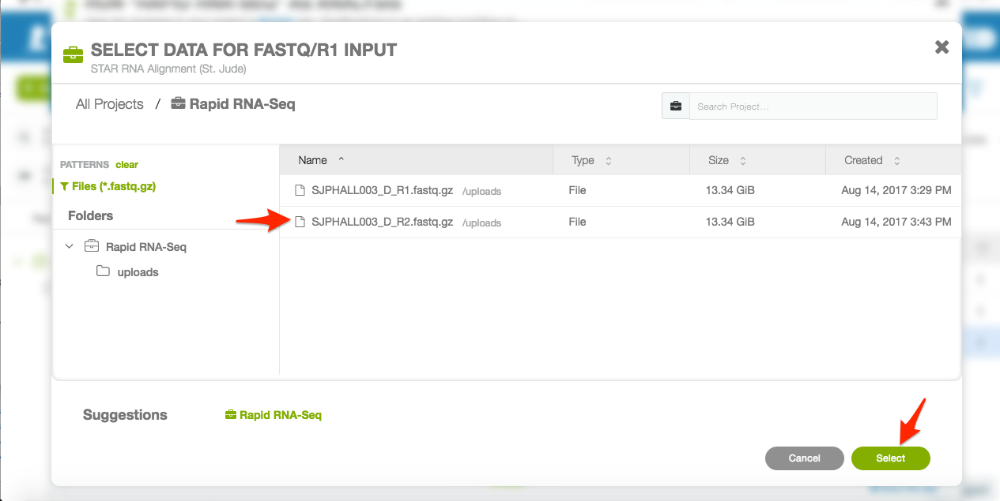

Pipeline Operation¶
Caution
This pipeline assumes hg19 coordinates. If you BAM file is not hg19, you’ll need to realign or provide FastQ input files.
Uploading Data¶
The Rapid RNA-Seq analysis pipeline takes paired, Gzipped FastQ files generated from RNA-Seq data as input. You can upload the files you would like to run using the St. Jude Cloud Desktop Application or by uploading data manually using the Command Line Interaction.
Note
You should click “Launch this tool” before attempting to upload data to the tool (the tool’s workspace is only created once you do this). After you are redirected, you can safely close the tab that was just opened.
Input File Configuration¶
Click “Launch this tool” on the tool’s landing page. You will redirected to the tool’s workspace, with the workflow automatically pulled up.
Note
If you do not see a screen similar to the one below, click the “Rapid RNA-Seq” item in the project.
The inputs to the pipeline are on the left side of the screen (see the red rectangle in the image below) and all of the outputs are on the right side of the screen. You’ll need to connect the files you uploaded in Uploading Data to their respective input file slots. The orange color denotes required inputs that you have to complete before the pipeline can run. The green “Run as Analysis” button in the top right will remain disabled until all inputs are correctly specified.
Click the
Fastq/R1input file slot in orange.
Select the “read 1” Gzipped FastQ file from your workspace.

Click the
Fastq/R2input file slot in orange.
Select the “read 2” Gzipped FastQ file from your workspace.

Parameter Configuration¶
There are no parameters to configure for the Rapid RNA-Seq pipeline.
Running the Pipeline¶
You should now see a screen similar to the one below. Note that the green “Run as Analysis” button in the top-right is no longer disabled. You can click the button to start the analysis.

You should now see a screen similar to the one below.

You can continue on to the next section to learn about monitoring your jobs.